Concpet
Message Oriented Middleware (MOM)
Asynchronous Messaging, fire-and-forget, evnet-driven architechure
Systems that rely upon synchronous requests typically have a limited ability to scale because eventually requests will begin to back up, thereby slowing the whole system.
Refernces
- In which domains are message oriented middleware like AMQP useful?
- Message Queue Evaluation Notes
- Messaging Patterns Overview
Reactive Programming
websocket
RFC 6455
5.2 Base Framing Protocol
Let’s examin our framing logic base by rfc6455 framing protocol as below.
1 | $msg = 'hi'; |
while sent hi as message, the output would be 10000001000000100110100001101001 in binary. Let’s fill in base frame protocol table as below.
1 | 0 1 2 3 |
\x81 are 2 hex; 10000001 in binary.
FIN=1 denotes a final frame
FIN: 1 bit
Indicates that this is the final fragment in a message. The first
fragment MAY also be the final fragment.
RSV1=0
RSV2=0
RSV3=0
RSV1~3 are set to 0, denotes we don’t use any extension.
RSV1, RSV2, RSV3: 1 bit each
MUST be 0 unless an extension is negotiated that defines meanings for non-zero values. If a nonzero value is received and none of the negotiated extensions defines the meaning of such a nonzero value, the receiving endpoint MUST _Fail the WebSocket Connection_.
opcode=0001 denotes a text frame
Opcode: 4 bits
Defines the interpretation of the “Payload data”. If an unknown opcode is received, the receiving endpoint MUST _Fail the WebSocket Connection_. The following values are defined.
* %x0 denotes a continuation frame * %x1 denotes a text frame * %x2 denotes a binary frame * %x3-7 are reserved for further non-control frames * %x8 denotes a connection close * %x9 denotes a ping * %xA denotes a pong * %xB-F are reserved for further control frames
chr(strlen($a[0])) returns a specific charater according to frame length, since we limit frame length to 125, first binary would be 0.
Mask=0 denotes no mask
Mask: 1 bit
Defines whether the “Payload data” is masked. If set to 1, a
masking key is present in masking-key, and this is used to unmask
the “Payload data” as per Section 5.3. All frames sent from
client to server have this bit set to 1.
Payload length= 0000010
in this example, ‘hi’ is a 2 charater data, ‘0000010’ in binary.
Payload length: 7 bits, 7+16 bits, or 7+64 bits
The length of the “Payload data”, in bytes: if 0-125, that is the
payload length. If 126, the following 2 bytes interpreted as a
16-bit unsigned integer are the payload length. If 127, the
following 8 bytes interpreted as a 64-bit unsigned integer (the
most significant bit MUST be 0) are the payload length. Multibyte
length quantities are expressed in network byte order. Note that
in all cases, the minimal number of bytes MUST be used to encode
the length, for example, the length of a 124-byte-long string
can’t be encoded as the sequence 126, 0, 124. The payload length
is the length of the “Extension data” + the length of the
“Application data”. The length of the “Extension data” may be
zero, in which case the payload length is the length of the
“Application data”.
Payload Data=0110100001101001
since we limit our frame length to 125, the remaining bytes are payload.
01101000 is ‘h’ in binary
01101001 is ‘i’ in binary
Application data: y bytes
Arbitrary “Application data”, taking up the remainder of the frame
after any “Extension data”. The length of the “Application data”
is equal to the payload length minus the length of the “Extension
data”.
Note: Further discussion would be needed while migration to another platform language which already implements WebSocket (like Java).
Refernces
websocket communication by Java (server-side)
Server (message broker, gateway)
- https://www.process-one.net/en/ejabberd/#getejabberd
- http://www.rabbitmq.com/
- http://activemq.apache.org/
- apache karaf
Apache Karaf is a small OSGi based runtime which provides a lightweight container onto which various components and applications can be deployed. http://kaazing.org/
The Gateway is a network gateway created to provide a single access point for real-time web based protocol elevation that supports load balancing, clustering, and security management. It is designed to provide scalable and secure bidirectional event-based communication over the web; on every platform, browser, and device.Requirement
- Java Runtime Environment (JRE) 1.7.0_21 or higher
- JAVA_HOME must be set
Feature
- http://caucho.com/
- http://www.lightstreamer.com/
- https://www.ejabberd.im/
消息队列软件产品大比拼
What are the differences between JBoss, GlassFish, and Apache Tomcat servers?
jWebsocket
jWebsocket official site
jWebSocket JMS based Cluster
php
Reference
GlassFish implements WebSocket over TLS
This example demostrate a echo server peroidically return server time via websocket connection.
preview


server configuration
web.xml1
2
3
4
5
6
7
8
9
10
11
12
13
14
15<?xml version="1.0" encoding="UTF-8"?>
...
<security-constraint>
<web-resource-collection>
<web-resource-name>Protected resource</web-resource-name>
<url-pattern>/*</url-pattern>
<http-method>GET</http-method>
</web-resource-collection>
<!-- https -->
<user-data-constraint>
<transport-guarantee>CONFIDENTIAL</transport-guarantee>
</user-data-constraint>
</security-constraint>
</web-app>
server-side
EchoEndpoint.java1
2
3
4
5
6
7
8
9
10
11
12
13
14
15
16
17
18
19
20
21
22
23
24
25
26
27
28
29
30
31
32
33
34
35
36
37
38
39
40
41
42
43
44
45
46
47
48
49
50
51
52
53
54
55
56
57
58
59
60
61
62
63
64
65
66
67package tw.henry.websocket;
import java.io.IOException;
import java.time.LocalTime;
import java.time.format.DateTimeFormatter;
import java.util.Set;
import java.util.concurrent.Executors;
import java.util.concurrent.ScheduledExecutorService;
import java.util.concurrent.ScheduledFuture;
import java.util.concurrent.TimeUnit;
import java.util.logging.Level;
import java.util.logging.Logger;
import javax.websocket.OnClose;
import javax.websocket.OnMessage;
import javax.websocket.OnOpen;
import javax.websocket.Session;
import javax.websocket.server.ServerEndpoint;
@ServerEndpoint("/echo")
public class EchoEndpoint {
private static final Logger LOG = Logger.getLogger(EchoEndpoint.class.getName());
private static Set<Session> allSessions;
static ScheduledExecutorService timer =
Executors.newSingleThreadScheduledExecutor();
DateTimeFormatter timeFormatter =
DateTimeFormatter.ofPattern("HH:mm:ss");
ScheduledFuture<?> result;
@OnMessage
public String echo(String message) {
return message + " (from your server)";
}
@OnOpen
public void connectionOpened(Session session) {
LOG.log(Level.INFO, "WebSocket opened: "+session.getId());
allSessions = session.getOpenSessions();
if (allSessions.size()==1){
result = timer.scheduleAtFixedRate(
() -> sendTimeToAll(session),0,10,TimeUnit.SECONDS);
}
}
private void sendTimeToAll(Session session){
allSessions = session.getOpenSessions();
for (Session sess: allSessions){
try{
sess.getBasicRemote().sendText("Hi, give me some thing to echo (Server time: " +
LocalTime.now().format(timeFormatter)+")");
} catch (IOException ioe) {
System.out.println(ioe.getMessage());
}
}
}
@OnClose
public void connectionClosed() {
result.cancel(true);
LOG.log(Level.INFO, "connection closed");
}
}
client-side: Web
1 | <html> |
client-side : Android
1 | import android.os.Build; |
Reference
Connect and transfer data with secure WebSockets in Android
JBoss-Eclipse development Env. setup
Environment
JDK 8
1
2
3
4$ java -version
java version "1.8.0_45"
Java(TM) SE Runtime Environment (build 1.8.0_45-b14)
Java HotSpot(TM) 64-Bit Server VM (build 25.45-b02, mixed mode)JBoss Enterprise Application Platform 6.4
Eclipse (Mars Release) IDE for Java EE Developers
Setup Steps
- Download JBoss EPA
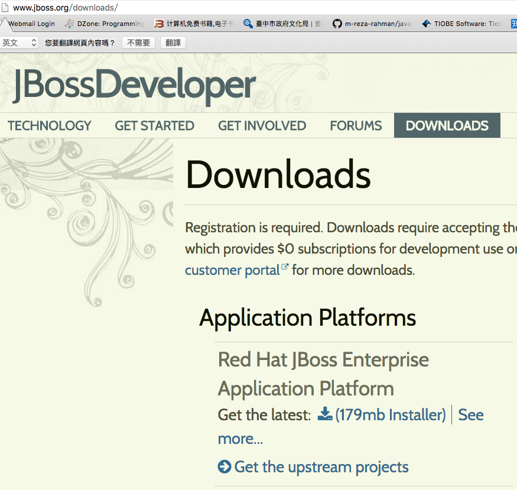
- installation
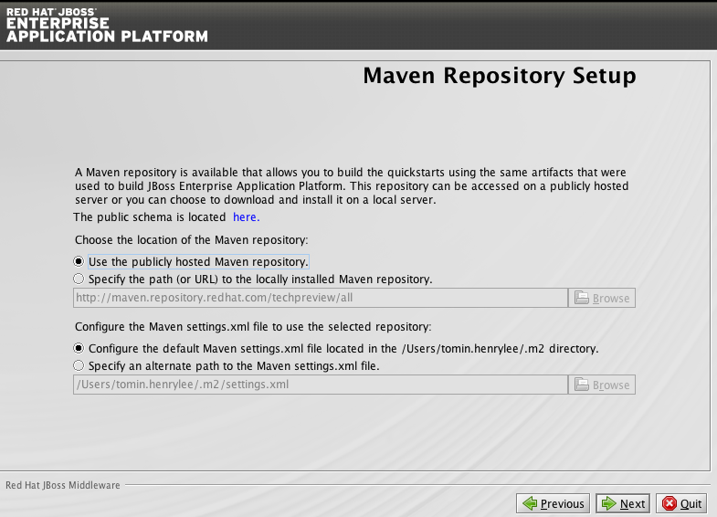
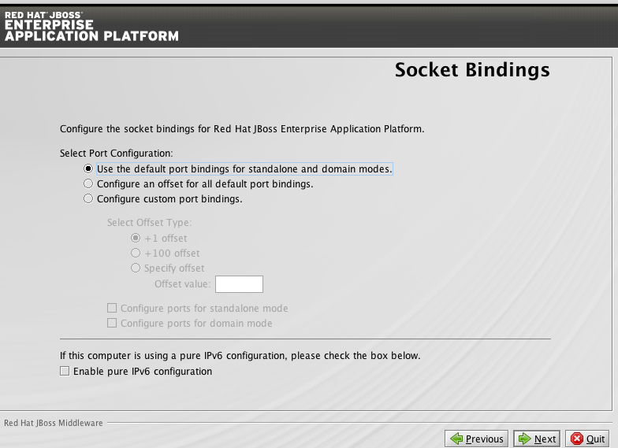
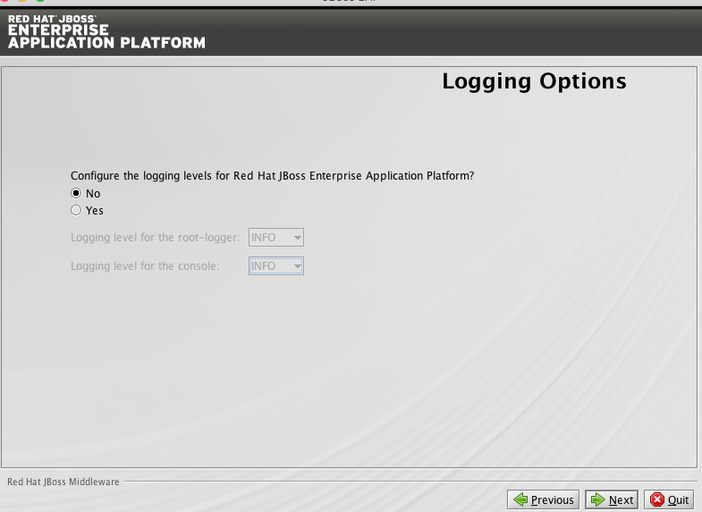
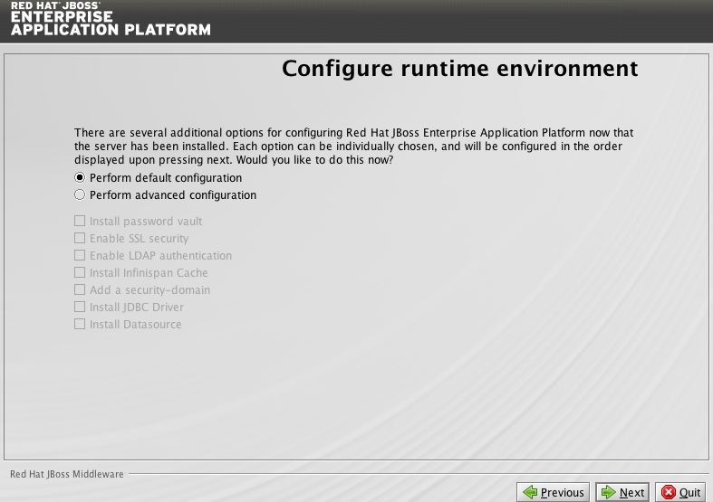
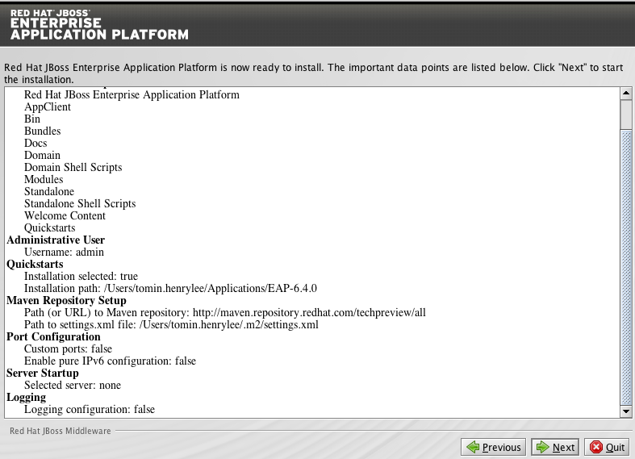
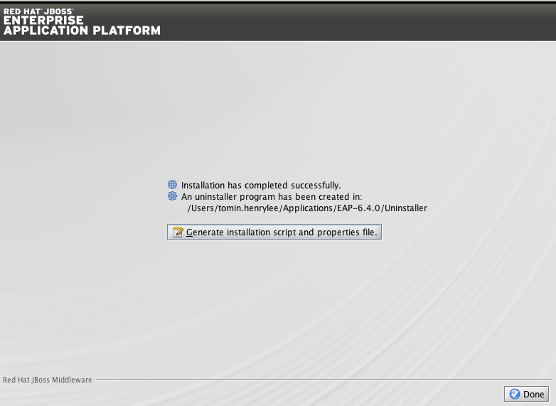
- Download JBoss Development Studio in marketplace
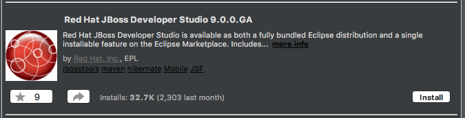
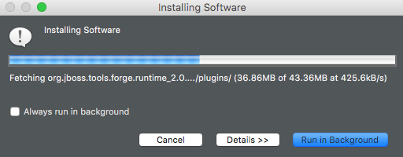
- add JBoss server in eclipse
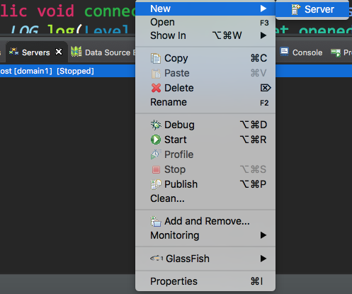
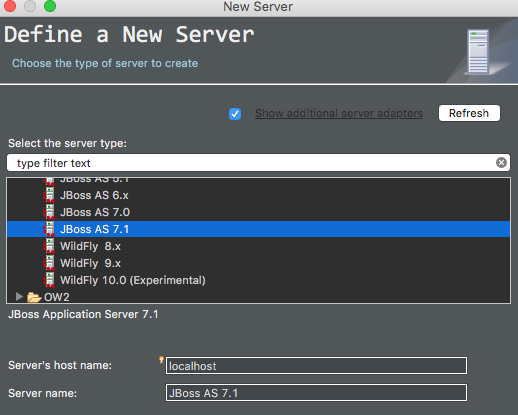
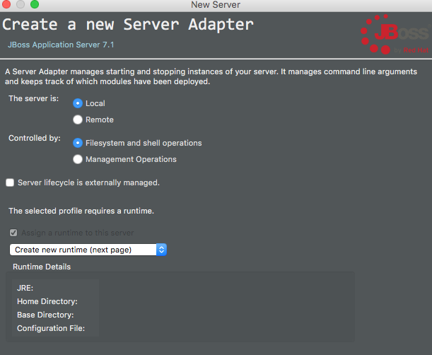
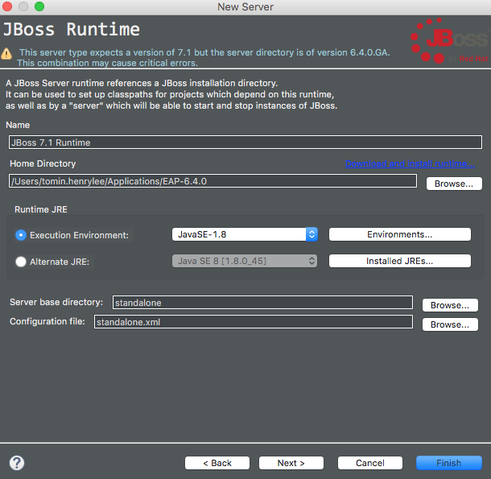
- Run JBoss server in eclipse, visit http://localhost:8080
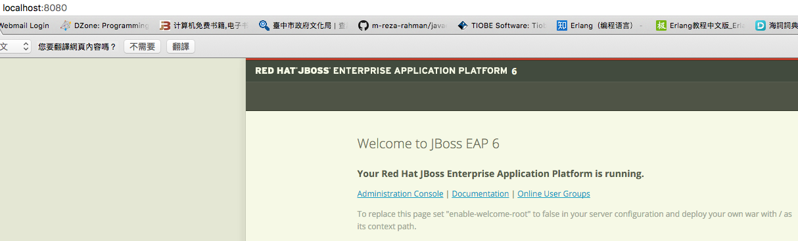
GlassFish-Eclipse development Env. setup
Environment
JDK 8
1
2
3
4$ java -version
java version "1.8.0_45"
Java(TM) SE Runtime Environment (build 1.8.0_45-b14)
Java HotSpot(TM) 64-Bit Server VM (build 25.45-b02, mixed mode)GlassFish 4 Java EE 7 Full Platform
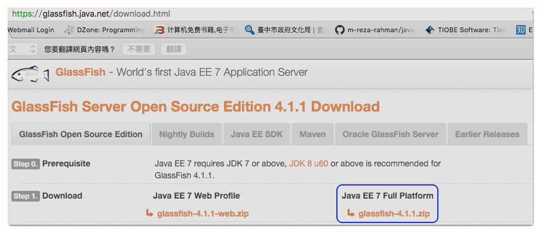
- Eclipse (Mars Release) IDE for Java EE Developers
Setup Steps
goto Eclipse preferences
hotkey: cmd+,, preferences->Server->Runtime Environment->Add…
no glashfish environment runtime found, click
Download additional server adapters
choose
GlassFish Tools
restart Eclipse after installaction completes

repeat step 1.~2., GlassFish runtime should appear, choose GlassFish 4

locate your glassfish4 path

use Wizard to create GlassFish Server
hotkey: cmd+n
choose GlassFish 4

setup administrator name and password, finish setup

Start Server

visit http://localhost:8080/ to see if GlassFish works properly.

Refernces
Multiple JDK in Mac OSX 10.10 Yosemite
Eclipse Marketplace GlassFish Tools
Spring
Spring 4 WebSocket + SockJS + STOMP + Tomcat Example
Test Microsoft Edge and versions of IE6 through IE11 using free virtual machines you download and manage locally.
Nginx as reverse proxy
Reference
nginx WebSocket Proxy
NGINX to reverse proxy websockets AND enable SSL (wss://)?
NGINX as a WebSocket Proxy
Cloud Service (SaaS)
- http://framework.realtime.co/
- https://pusher.com/
- https://www.pubnub.com/
- https://ejabberd-saas.com/
- https://www.mulesoft.com/
- https://www.hydna.com/
- https://www.pubnub.com/
- https://www.intercom.io/
- https://cloud.google.com/pubsub/
Scaling Secret: Real-time Chat
Protocol
By using standard protocol instead of proprietary one, we could leverage lots of client and server implementations to quickly build our app.
- STOMP: Simple (or Streaming) Text Oriented Messaging Protocol
- it’s not always straightforward to port code between brokers
- XMPP : Extensible Messaging and Presence Protocol
- AQMP : Advanced Message Queuing Protocol
- Except puducer,broker,consumer(like JMS), AQMP introduce new component ‘exchange’
- MQTT : Message Queue Telemery Transport
- Can be applied to IoT, such as connecting an Arduino device to a web service with MQTT.
- JMS : Java Message Service
- Protocol Buffers
Refernces
Message Queue Evaluation Notes
Choosing Your Messaging Protocol: AMQP, MQTT, or STOMP
The WhatsApp Architecture Facebook Bought For $19 Billion - High Scalability -
INSIDE ERLANG, THE RARE PROGRAMMING LANGUAGE BEHIND WHATSAPP’S SUCCESS
What is the technology behind the web-based version of WhatsApp?
- chat history is only stored on phone, none on server. Thus, to use the web client your smartphone has to be connected to the internet.
- What protocol is used in Whatsapp app? SSL socket to the WhatsApp server pools.
- Erlang/FreeBSD-based server infrastructure
- Server systems that do the backend message routing are done in Erlang.
- Ericsson engineer Joe Armstrong developed Erlang with the logic of telecommunications in mind: millions of parallel conversations happening at the same time, with almost zero tolerance for downtime.
- Erlang allows for bug fixes and updates without downtime.
- Erlang is very good at efficiently executing commands across processors within a single machine.
- Great achievement is that the number of active users is managed with a really small server footprint. Team consensus is that it is largely because of Erlang.
- Interesting to note Facebook Chat was written in Erlang in 2009, but they went away from it because it was hard to find qualified programmers.
- Server systems that do the backend message routing are done in Erlang.
- WhatsApp server has started from ejabberd
- Ejabberd is a famous open source Jabber server written in Erlang.
- Originally chosen because its open, had great reviews by developers, ease of start and the promise of Erlang’s long term suitability for large communication system.
- The next few years were spent re-writing and modifying quite a few parts of ejabberd, including switching from XMPP to internally developed protocol, restructuring the code base and redesigning some core components, and making lots of important modifications to Erlang VM to optimize server performance.
- A primary gauge of system health is message queue length. The message queue length of all the processes on a node is constantly monitored and an alert is sent out if they accumulate backlog beyond a preset threshold. If one or more processes falls behind that is alerted on, which gives a pointer to the next bottleneck to attack.
- Multimedia messages are sent by uploading the image, audio or video to be sent to an HTTP server and then sending a link to the content along with its Base64 encoded thumbnail (if applicable).
Erlang
- The basic unit of concurrency in Erlang is the process.
- An Erlang process is a little virtual machine that can evaluate a single Erlang function; it should not be confused with an operating system process.
- cannot rebind variable.